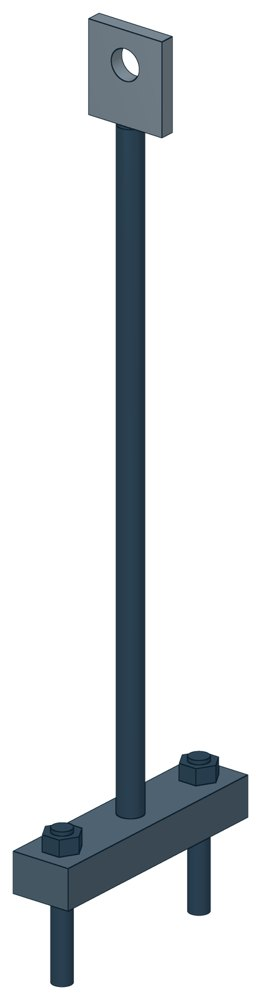

Блок подвески с траверсой ОСТ 34-10-732-93
ОСТ 34-10-732-93. Допускаемая нагрузка — до 78,4 кН, масса 2,6–20 кг.

- Документ
- ОСТ 34-10-732-93
- Исполнений
- 6
- Допускаемая нагрузка
- до 78,4 кН
- Масса
- 2,6–20 кг
- 3D-модели
- у всех исполнений (условные: общий вид по габаритам)
Таблица исполнений ОСТ 34-10-732-93
| Обозначение | Код ПРОМБУРГ | Допускаемая нагрузкакН | Высота изделиямм | Массакг | 3D |
|---|---|---|---|---|---|
| 01 ОСТ 34-10-732-93 | ПБ-34732-0000-1 | 4,4 | 1025 | 2,6 | 3D |
| 02 ОСТ 34-10-732-93 | ПБ-34732-0000-2 | 14,7 | 1025 | 2,9 | 3D |
| 03 ОСТ 34-10-732-93 | ПБ-34732-0000-3 | 23,5 | 1030 | 5,4 | 3D |
| 04 ОСТ 34-10-732-93 | ПБ-34732-0000-4 | 33,3 | 1040 | 8,8 | 3D |
| 05 ОСТ 34-10-732-93 | ПБ-34732-0000-5 | 53,9 | 1045 | 12,8 | 3D |
| 06 ОСТ 34-10-732-93 | ПБ-34732-0000-6 | 78,4 | 1055 | 20 | 3D |
Чтобы заказать, сообщите обозначение и код ПРОМБУРГ: +7 (499) 325-51-35, promburg@yandex.ru.
Нормативные документы
- ОСТ 34-10-732-93 Блок подвески с траверсой. Конструкция и размеры — документ, по которому изготавливается изделие
Связанные позиции
- Соседний тип: ОСТ 34-10-731-93 — Блоки подвески с плавником
Другие типы раздела
Подвески и блоки трубопроводов ТЭС и АЭС (ОСТ 34-10-724…745-93)
- Блоки подвесок приварных ОСТ 34-10-724-93
- Блоки подвесок хомутовых для горизонтальных трубопроводов ОСТ 34-10-725-93
- Блок подвески с опорной балкой ОСТ 34-10-726-93
- Блоки подвесок приварных для вертикальных трубопроводов ОСТ 34-10-727-93
- Блоки подвесок хомутовых ОСТ 34-10-728-93
- Блок подвески с проушиной ОСТ 34-10-729-93
- Блоки подвески с серьгой ОСТ 34-10-730-93
- Блоки подвески с плавником ОСТ 34-10-731-93
- Хомуты для горизонтальных трубопроводов ОСТ 34-10-735-93
- Хомуты для вертикальных трубопроводов ОСТ 34-10-736-93
- Балки опорные ОСТ 34-10-737-93
- Тяги резьбовые с муфтами ОСТ 34-10-739-93
- Блоки крепления подвески ОСТ 34-10-740-93
- Тяги шарнирные ОСТ 34-10-742-93
- Блоки пружинные ОСТ 34-10-743-93
- Блоки пружинные сдвоенные ОСТ 34-10-744-93
- Блоки пружинные опорные ОСТ 34-10-745-93
Частые вопросы
По какому диаметру подбирать — Dн или Ду?
По наружному диаметру трубы Dн: именно он стоит в таблицах серии. Ду — условный проход, округлённая величина: Ду 100 соответствует Dн 108. В заявке указывайте Dн и толщину стенки трубы.
В старом проекте нагрузка в тс, а здесь в кН. Как сравнить?
Серия 4.903-10 даёт нагрузки в тонна-силах, серия 5.903-13 — в килоньютонах. 1 тс = 9,81 кН, то есть 10 тс — это около 98 кН. В таблицах каталога переключатель единиц пересчитывает значения.
Из какой стали изготавливаются опоры?
По рабочим чертежам серии листовые детали — Ст3сп5 ГОСТ 14637-89, хомуты из круга — сталь 20 ГОСТ 1050-88. Для районов с низкой расчётной температурой воздуха применяется низколегированная сталь, в том числе 09Г2С; размеры опор при этом не меняются. В заявке укажите расчётную температуру наружного воздуха.
Почему часть поверхностей опоры не окрашена?
Поверхности под приварку к трубе и к несущей конструкции оставляют без краски, иначе шов получится некачественным. Их консервируют смазкой, которую снимают перед сваркой.
Что указать в заявке, чтобы получить цену без уточнений?
Обозначение с номером исполнения или код ПБ, количество, Dн и стенку трубы, расчётную температуру наружного воздуха, покрытие, город доставки и желаемый срок. Кнопка «В заявку» в таблице собирает спецификацию, которую можно выгрузить в Excel или отправить письмом.